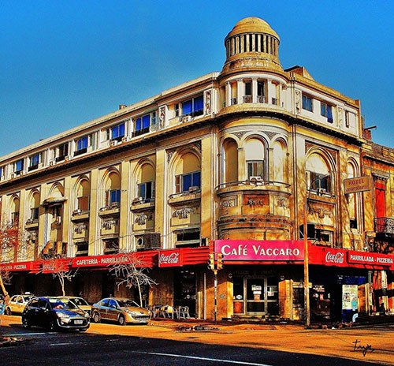

Mucho antes de los campeonatos nacionales y de las grandes actuaciones internacionales, el billar ya tenía un lugar en la vida social montevideana. Los cafés reunían a vecinos, viajeros y aficionados alrededor de sus mesas, en espacios donde el entretenimiento convivía con la conversación y el intercambio de noticias.
Una pista documental de 1841
El historiador Juan Antonio Varese, al estudiar los antiguos cafés de Montevideo, recuperó anuncios de prensa que permiten rastrear la presencia del billar en la primera mitad del siglo XIX. En El Nacional del 14 de abril de 1841 figura el aviso de un establecimiento de «Billar y Café» en la calle San Luis, número 57, a cargo del señor Bernard.
Otros avisos de aquel mismo año mencionan fondas, cafés y billares en distintos puntos de la ciudad. No se trata todavía de un registro de competencias deportivas, sino de una evidencia de que el juego formaba parte de la oferta de aquellos establecimientos.
Los cafés como espacios de encuentro
En una época anterior a los clubes especializados y a los sistemas modernos de torneos, las mesas instaladas en los cafés ofrecían un lugar de práctica y reunión. Allí podían observarse las destrezas de jugadores experimentados, aprender golpes y compartir partidas.
La evolución de ese ambiente social hacia una actividad organizada no fue inmediata. Reconstruirla exige reunir avisos, fotografías, recuerdos y registros de las instituciones que aparecieron con el paso de las décadas.
El recuerdo del Café Vaccaro
Entre los nombres asociados a la memoria del billar montevideano aparece el Café Vaccaro, en el barrio Goes. Un reportaje de la revista Ahora, publicado en octubre de 1972, evocó a jugadores de comienzos del siglo XX y recuperó testimonios vinculados con ese establecimiento.

Esos relatos nos acercan a una etapa en la que la fama de los buenos billaristas se construía ante quienes observaban sus partidas. Son recuerdos que merecen conservarse, pero también contrastarse con otras fuentes para distinguir con precisión fechas, nombres y resultados.
1936: un hito de la organización federativa
El reportaje de Ahora de 1972 señala el año 1936 como fecha de fundación de la Federación Uruguaya de Billar y menciona entre sus impulsores a Francisco Ferraro, Doroteo Sena, Favaro, Luis Adami, Daniel Silva Corres, Sarda Folle y José Alzpuru.
Este dato abre una investigación fundamental: conocer los primeros estatutos, las autoridades y los clubes vinculados a aquella Federación, y establecer documentalmente su relación con las estructuras federativas posteriores.
La historia del billar uruguayo comenzó mucho antes de sus grandes títulos: también vive en los cafés, las mesas y las personas que transmitieron su afición de una generación a otra.
Una memoria para construir entre todos
Con esta serie, la Federación de Billar del Uruguay se propone reunir y divulgar documentos, fotografías, resultados y testimonios sobre el desarrollo del deporte en el país. Cada nueva entrega incorporará protagonistas y episodios de distintas épocas, con el compromiso de identificar las fuentes y señalar los datos que aún requieran confirmación.
Invitamos a los clubes, jugadores y familias a colaborar con recuerdos, recortes de prensa, fotografías y documentos que permitan enriquecer esta historia compartida.
Fuentes y documentación
Juan Antonio Varese. «Influencia francesa en los cafés montevideanos (1.ª parte)», revista Raíces. Incluye referencias a avisos de El Nacional de 1841.
Consultar investigación
Revista Ahora. Reportaje sobre el billar uruguayo, 8 de octubre de 1972. Documento histórico utilizado para las referencias al Café Vaccaro y a la Federación de 1936.
Consultar facsímil
Imágenes: archivos fotográficos aportados para el proyecto. Los créditos, fechas y permisos deberán verificarse antes de su publicación pública.